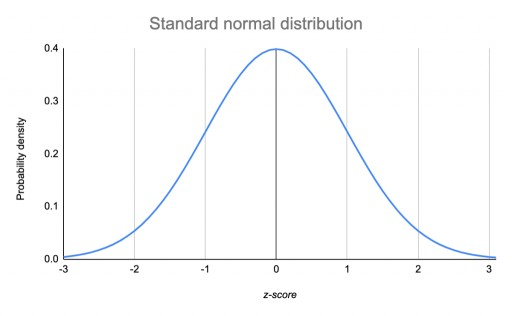
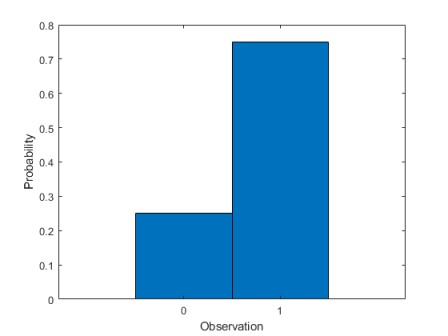
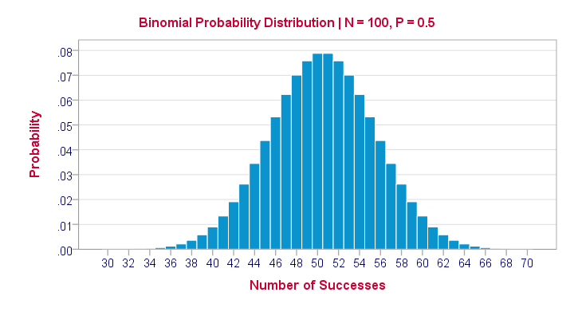

Multinomial Naive Bayes¶
Before proceeding to Multinomial Naive Bayes, let’s have a quick look on the types of distributions we’ve seen yet.
Types of Distributions¶
Gaussian/Normal Distribution¶
This is the continuos distribution of data, where most of the data lies around the mean value, we’ve seen more about this in Linear Regression MLE. Here the mean of the data is represented by \(\mu\) and the standard deviation of the data is represented by \(\sigma\).

Bernoulli Distribution¶
This is a distribution where the no. of possible outcomes are only two and the event is occurred only a single time.
Eg: Flipping a coin for a single time
Equation :
\(\large{P(X) = p^n \times (1-p)^{1-n}}\)
p = probability of that event
n = binary output value i.e. either 0 or 1
Eg: Probability of heads for a fair coin
$P(H) = (0.5)^1 \times (0.5)^0$
$P(H) = 0.5$

Binomial Distribution¶
When a Bernoulli Distribution is performed for ‘n’ no. of trials it becomes a binomial distribution.
Eg: Flipping a coin for 5 times.
Equation:
\(\large{P(X) =\hspace{1mm}^nC_x \hspace{1mm}[p^x \times (1-p)^{n-x}]}\)
p = probability of a single event
x = value of outcome
n = no. of trials

Multinomial Distribution¶
When the number of possible outcomes becomes ‘m’ and no. of trials are ‘n’, it becomes Multinomial Distribution.
Eg: Rolling a die 3 times
Equation:
\(\large{P(X) = \dfrac{n!}{(n_1!)(n_2!)...(n_m!)}(P_1)^{n_1}(P_2)^{n_2}...(P_m)^{n_m}}\)
\(n\) = number of events
\(n_1\) = number of outcomes, event 1
\(n_2\) = number of outcomes, event 2
\(n_m\) = number of outcomes, event m
\(p_1\) = probability event 1 happens
\(p_2\) = probability event 2 happens
\(p_m\) = probability event m happens
Introduction to Multi-nomial Naive Bayes¶
As we saw in Naive Bayes, it is a simple technique for constructing binary classifiers: models that are able to classify in binary values(0 & 1). A naive Bayes classifier considers each of these features to contribute independently. A Multinomial Naive Bayes is able to perform a lot of complexer tasks. Like Naive Bayes was able to classify an email into the category of Spam or Not Spam, but if we want to classify some articles into some categories, naive Bayes may not be able to do it, as it is not a binary classification task. But on the other hand, Multinomial Naive Bayes is able to perform this task.
Multinomial Naive Bayes algorithm is a probabilistic learning method that is mostly used in Natural Language Processing (NLP). The algorithm is based on the Bayes theorem and predicts the tag of a text such as a piece of email or newspaper article. It calculates the probability of each tag for a given sample and then gives the tag with the highest probability as output. Let’s try to understand Multinomial naive Bayes with the help of an example.
Classify these articles in the sector of Education, News or Sports:
The Prime Minister of India, changed their currency notes.
Virat Kohli is a great young player of Cricket. He is one of the great batsman of India.
Vivekanand International is a great school. There are many co-curricular activities also.
Internet Services has been banned in Jammu. Will be resumed by next month.
Students of D.A.V are very active. Cricket is very popular among them.
Now just by looking at the existence of some words, we will not be able to classify them correctly. As we can see, “India” is present on both article no. \(1\) and \(2\). But the \(1^{st}\) article should be classified under News while \(2^{nd}\) should be classified under Sports. Same as article no. \(2\) and \(5\), both have the word “Cricket”. But \(2^{nd}\) is under Sports and \(5^{th}\) is under Education. So, we need something more robust here, so we can classify them by also seeing the word count. So the vectorization in Multinomial Naive Bayes is performed by filling out the word count, instead of 0 and 1.
So our data should look like:
Word1 |
Word2 |
Word3 |
Word4 |
Word5 |
Word6 |
Sports or Not |
|---|---|---|---|---|---|---|
3 |
2 |
0 |
1 |
4 |
2 |
1 |
4 |
2 |
3 |
0 |
1 |
5 |
0 |
2 |
2 |
2 |
1 |
0 |
0 |
1 |
4 |
1 |
1 |
0 |
0 |
0 |
0 |
9 |
0 |
3 |
1 |
1 |
2 |
1 |
Now according to Bayes Theorem:
\(P(y/X) = \dfrac{P(X/y) \times P(y)}{P(X)}\)
Here \(P(X)\) and \(P(y)\) is constant for every \(P(y/X)\), so we’ve to focus on \(P(X/y)\)
\(P(X/y) = P(x_1, x_2, x_3... x_n / y) = \dfrac{N!}{x_1! x_2! x_3! ... x_n!} \times P(W_1)^{x_1}.P(W_2)^{x_2}.P(W_3)^{x_3} ... P(W_n)^{x_n}\)
Here:
\(x_1\) = count of Word1
\(x_2\) = count of Word2
\(x_n\) = count of Wordn
\(N\) = Total words count
\(P(W_1)\) = Prob. of occurence of Word1 individually
\(P(W_2)\) = Prob. of occurence of Word2 individually
\(P(W_n)\) = Prob. of occurence of Wordn individually
Generalizing above equation:
\(P(X/y) = \dfrac{N!}{\prod_{i=1}^{n} x_i!} \times \prod^n_{i=1}[P(W_i)^{x_i}]\)
Here the value of y can be 0 or 1 (i.e. Sports Article or not)
Taking the data, where y=0
\(P(X/y_{=0}) = \dfrac{N_0!}{\prod_{i=1}^{n} x_i!} \times \prod^n_{i=1}[P(W_i)^{x_i}]\)
Notice here now \(N_0\) = Total words count where y=0
Now to maximize the probability of \(P(X/y_{=0/1})\), we have to maximize the likelihood of the word distribution accordingly.
MLE for Multinomial Naive Bayes¶
Taking Total no. of words = \(v\)
Total Word count = \(N\)
\(P(x_1, x_2, x_3 ... x_v) = \dfrac{N!}{x_i!} \prod_{i=1}^{v}p_i^{x_i}\)
Taking log:
\(P(x_1, x_2, x_3 ... x_v) = log \dfrac{N!}{x_i!} + \sum_{i=1}^{v} x_i log(p_i)\)
Using Lagrange’s Multipliers
\(F(p) = log \dfrac{N!}{x_i!} + \sum_{i=1}^{v} x_i log(p_i)\)
and as sum of all probabilities = 1
\(G(p) = \sum_{i=1}^{v} p_i = 1\)
Lagrange Multiplier Equation : \(L = \triangle F(p) - \lambda \triangle G(p) = 0\)
\(\dfrac{dL}{dp_i} = \triangle \begin{pmatrix} log\dfrac{N!}{x_i!} + \sum^{v}_{i=1} x_i.log(p_i) \end{pmatrix} - \lambda \triangle \begin{pmatrix} \sum_{i=1}^v p_i - 1\end{pmatrix}\)
\(\dfrac{dL}{dp_i} = \dfrac{x_i}{p_i} - \lambda\)
\(0 = \dfrac{x_i}{p_i} - \lambda\)
\(p_i = \dfrac{x_i}{\lambda} \hspace{2cm}\) \(-- \large{Eq^n.1}\)
Put this value of \(p_i\) in \(G(p)\)
\(G(p) = \sum_{i=1}^v \dfrac{x_i}{\lambda} = 1\)
\(\sum_{i=1}^v x_i = \lambda\)
\(N = \lambda \hspace{3cm}\) As \(\begin{pmatrix} \sum_{i=1}^v x_i = N \end{pmatrix}\)
Put this value of \(\lambda\) in eq.1
\(p_i = \dfrac{x_i}{N}\)
So, we got to know probability of each word [\(P(W_i)\)] is \(\dfrac{x_{Wi}}{N}\), and finally substituting this in our equation
\(P(X/y) = \dfrac{N!}{\prod_{i=1}^{n} x_i!} \times \prod_{i=1}^{n}(P_{Wi})^{x_i}\)
and we know the values of \(N\) and \(x_i\) using the table, that we made using vectorization and hence we can find \(P(X/y)\) and eventually we can make our prediction.
Further Readings¶
Like we saw Multinomial Naive Bayes, other Naive Bayes depending on some other distributions of the data also exist.
You may read about them in the docs:
Multinomial NB: https://scikit-learn.org/stable/modules/generated/sklearn.naive_bayes.MultinomialNB.html#examples-using-sklearn-naive-bayes-multinomialnb
Bernoulli NB: https://scikit-learn.org/stable/modules/generated/sklearn.naive_bayes.BernoulliNB.html#sklearn.naive_bayes.BernoulliNB
Categorical NB: https://scikit-learn.org/stable/modules/generated/sklearn.naive_bayes.CategoricalNB.html#sklearn.naive_bayes.CategoricalNB
Gaussian NB: https://scikit-learn.org/stable/modules/generated/sklearn.naive_bayes.GaussianNB.html#sklearn.naive_bayes.GaussianNB